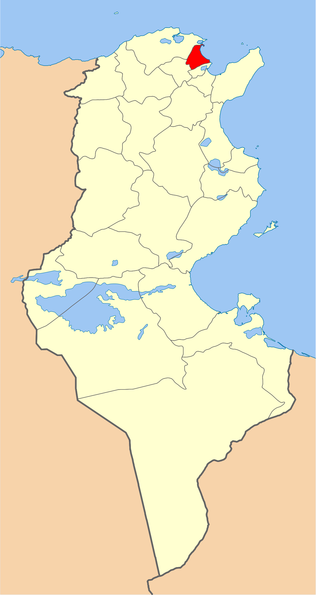
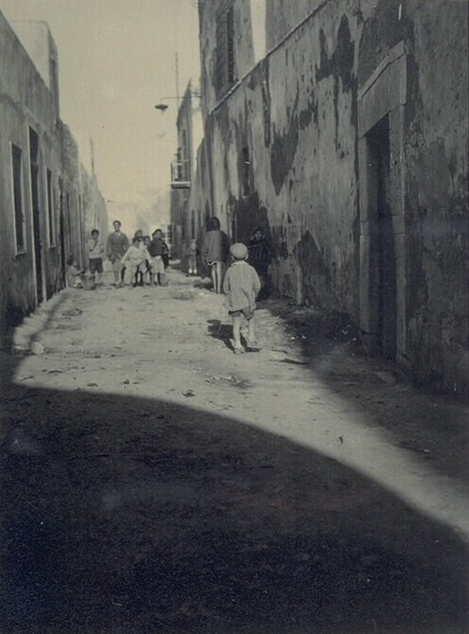
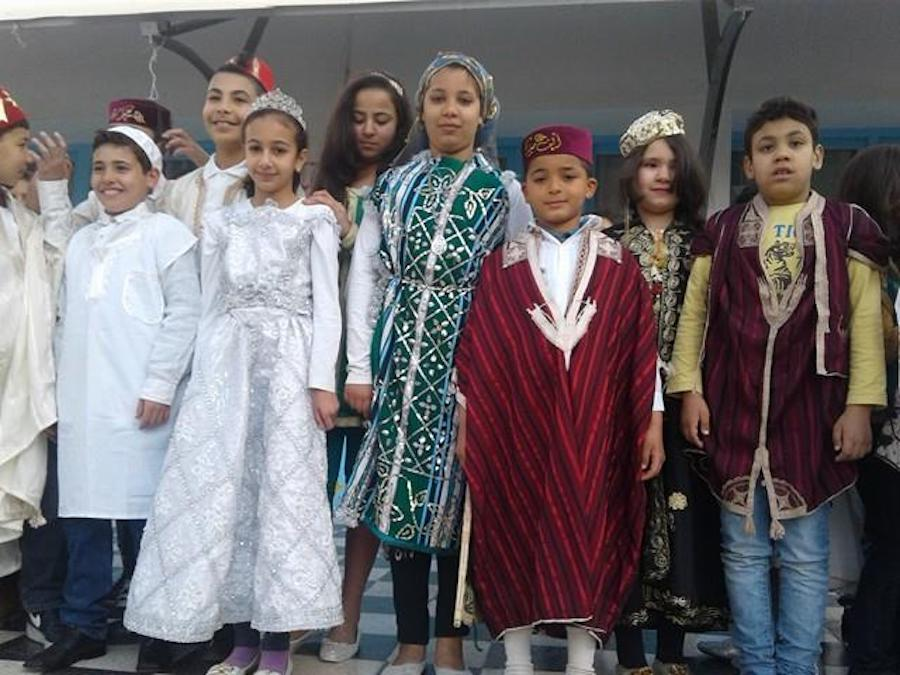
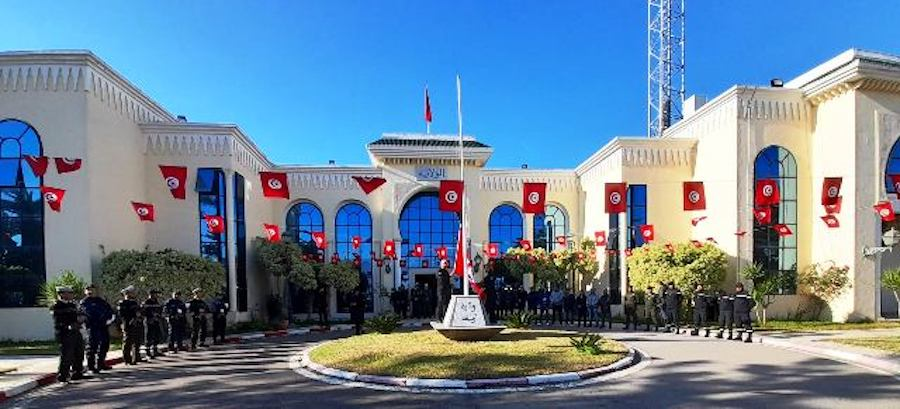
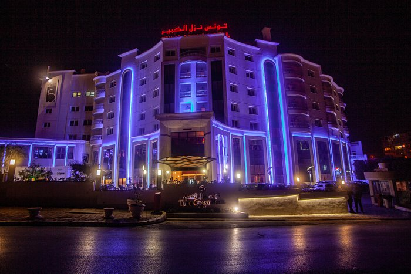
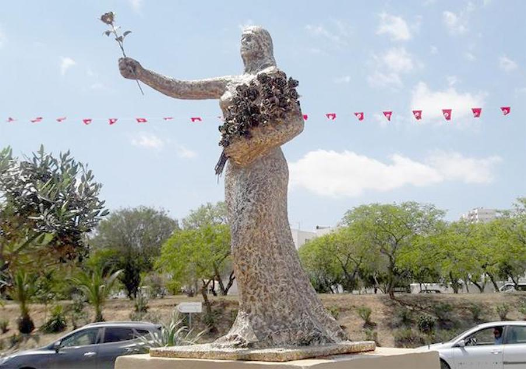

Le gouvernorat de l’Ariana est situé au Nord Est de la Tunisie. Il est limité à l’Est par la méditerranée, au Nord par le gouvernorat de Bizerte, à l’Ouest par le gouvernorat de La Mannouba et au Sud par le gouvernorat de Tunis. Sa proximité de la capitale a fait de ce gouvernorat un pôle économique et social important.
Parc d'attractions unique en son genre.
Immense parc aux paysages sublimes.
Magnifique lac situé à proximité d'Ariana.
Archipel de Philippe Barrière.
482 km2
80 000
576 088
La ville, dont la superficie couvre 18 000 hectares, est le pôle d'une agglomération couvrant sept circonscriptions pour un bassin de population de 160 000 habitants. Elle se situe au milieu d'une vaste plaine bordée par les plages de Raoued et de Gammarth, par la ville de Carthage et par la colline de Sidi Bou Saïd.

Le nom de la ville n'est pas un vocable arabe : elle semble en fait cristalliser un souvenir de l'occupation vandale et serait à rapprocher du latin ariani (ariens). Des auteurs du début du xvie siècle[Lesquels ?] indiquent que cette localité est alors remplie de vestiges antiques datant des Goths et des Vandales. C'est dans les environs de l'Ariana que se trouvait le parc d'Abou Fihr avec ses bosquets et ses lacs artificiels à l'usage des princesses hafsides, les poètes tunisiens ayant longtemps chanté les roses des jardins de l'Ariana. Un autre souvenir de l'époque hafside est le mausolée Sidi Ammar, tombe d'un saint mort de maladie en combattant les croisés débarqués à Carthage en 1270.


hover me
hover me
hover me
hover me